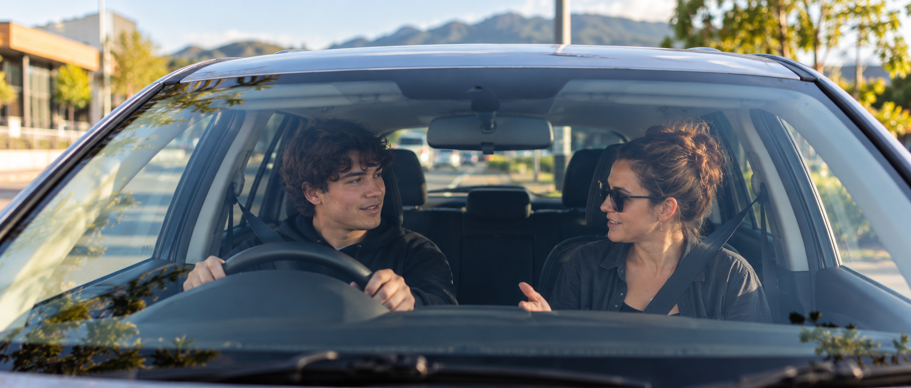

Transport Support
Get where youneed to go.
Transport Support helps you access the places, activities and appointments that are part of everyday life. Support is shaped around where you need to go, your goals and the level of assistance you need.

Everyday access
Getting where life happens.
Transport Support can help you access the places that are part of your everyday life, with support shaped around your routine, commitments and goals.
-
Appointments & Essentials
Health appointments and everyday essentials.
-
Work & Study
Workplaces, training and study commitments.
-
Community & Activities
Social plans, programs and activities.
-
Shopping & Errands
Groceries, errands and practical tasks.
More than a ride
Getting there can be part of building independence.
Transport Support can include more than the journey itself. Depending on your goals, support can create opportunities to plan where you're going, prepare for the trip, understand different transport options and build confidence getting around.
Planning the journey
Knowing where you're going and what you need before leaving.
Using public transport
Building familiarity with buses, routes, stops and everyday travel where appropriate.
Getting organised
Preparing appointments, belongings, timing and other practical parts of leaving home.
Building confidence
Gradually becoming more comfortable navigating familiar and new places.
Real experiences
Transport Support in real life.
Building independence
Confidence can grow with every journey.
- Planning
- Confidence
- Travel Skills
- Decision-making
- Independence